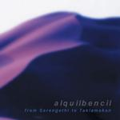

| Artist: | Alquilbencil |
| Title: | From Serengethi To Taklamakan |
| Label: | Musea FGBG 4421 |
| Length(s): | 63 minutes |
| Year(s) of release: | 2002 |
| Month of review: | [09/2002] |
| 1) | Introduccio | 1.16 |
| 2) | La Presa | 7.24 |
| 3) | Waiting Room | 10.24 |
| 4) | Hit | 5.09 |
| 5) | Dire: From Serengheti To Taklamakan | 5.49 |
| 6) | Fertil Crescent | 8.33 |
| 7) | Estricnina | 4.54 |
| 8) | Serveix-me Un Altre Got De Vi | 7.46 |
| 9) | Coda | 5.04 |
| 10) | Cet | 6.14 |
Waiting Room opens with strong keyboards, and goes on to develop into an almost traditional symphonic track. This is rather surprising considering the two tracks before, which were rather avant gardist. I hear near quotes of Shadow Of The Hierophant and The Snowgoose, but most of all Alquilbencil. Very good.
I don't fancy Hit to live up to its title, at least not as far as the charts are concerned, but its experimentalism, with sudden whisps of reeds or Frippian guitars (Red area) interspersed with the general theme gets the attention alright.
The oriental start of Dire: From Serengheti To Taklamakan brings on another of those subtle changes in direction, with likewise ease. The later speed up is joined in with a tango, with the final seeing the return of the Dire theme.
Fertil Crescent opens rather gently and friendly, to slowly build to the vocal section, forming into another very strong symphonic track.
The title Estricnina makes me wonder what the Spanish word for strychnine is, there certainly is a bit of venom in this one, as there is a bit of humor, including a brief double speed fragment of When The Saints Go Marching In. Alquilbencil show that as complex as their music may be, they still don't necessarily feel like taking themselves too seriously.
Serveix-me Un Altre Got De Vi (come again?) starts a gentle track, based on flute and sax, but this near tranquility is shooed away by pressing piano and searing guitar. Peace does return, however, moving this track towards a friendly ending. This track is pretty nice, but can't live up to the standards set before.
Coda closes the regular concert part of this album in a fitting way, with the combination of gentleness and experimentalism.
Cet is a bonus track, recorded in 2000, undoubtedly in a studio somewhere. This offering shows a little more finesse in its experimentalism, which could of course just as well be the difference between live and studio recordings. Excellent track